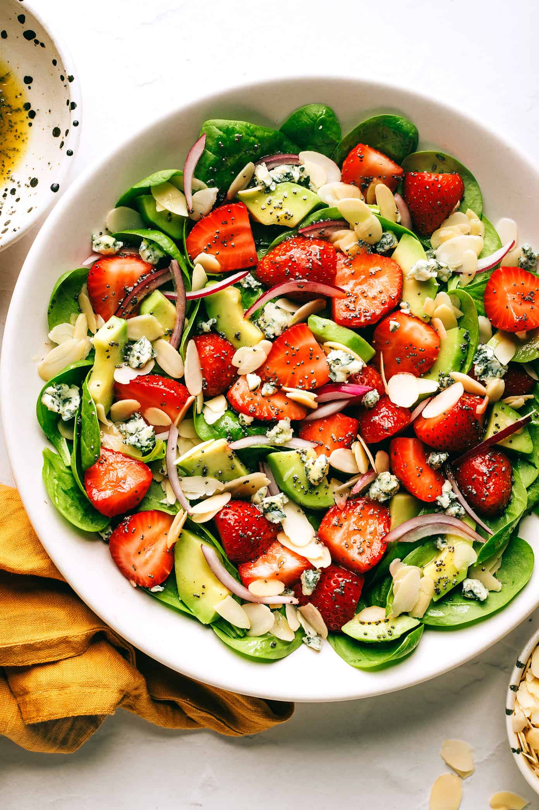

Spinach and Strawberry Salad

Description
This Delicious salad consisting of Strawberries, Spinach, Avocados, and a touch of Poppyseed dressing is to die for, and luckily, it is easy to make. All you need is some few fresh ingridients and in no time you'll have a delicious fresh bowl of salad.
Ingridients
- 6 cups fresh baby spinach
- 1 pint strawberries, hulled and sliced
- 1 avocado, peeled, pitted and diced
- 4 ounces crumbled blue cheese (or goat cheese or feta)
- 1/3 cup sliced almonds, toasted
Steps
- Grab a bowl that you'll need to prepare the dish.
- Put your fresh baby spinach followed by your strawberries.
- Add the sliced avocados (make sure that they are thinly cut).
- Drizzle evenly with the dressing then gently toss until combined.
- Garnish it with your sliced almonds on top.
- Add some bluecheese for that extra taste (optional).